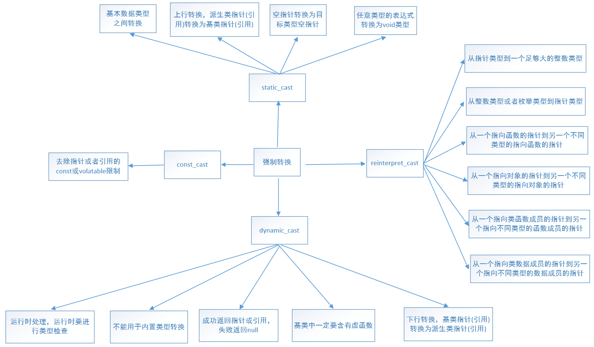
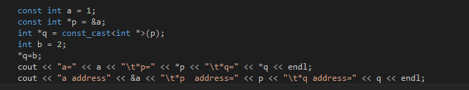
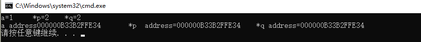
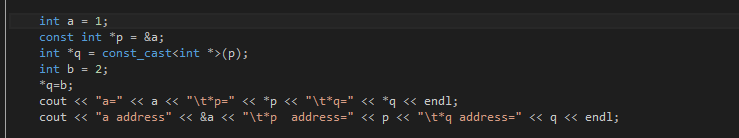
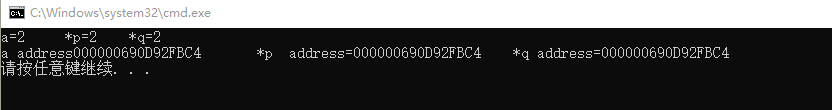

C语言的强制转换为在数据面前之间加数据类型进行转换，即（目标数据类型）原数据类型。c++为了更好的区分强制转换的类型，达到见其名知其意的效果，共将强制转换分为四种，即
1、static_cast<目标数据类型>原数据类型
2、const_cast<目标数据类型>原数据类型
3、reinterpret_cast<目标数据类型>原数据类型
4、dynamic_cast<目标数据类型>原数据类型

1）用于类层次结构中基类和派生类之间指针或引用的转换
进行上行转换（把派生类的指针或引用转换成基类表示）是安全的
进行下行转换（把基类的指针或引用转换为派生类表示），由于没有动态类型检查，所以是不安全的
2）用于基本数据类型之间的转换，如把int转换成char。这种转换的安全由开发人员来保证
3）把空指针转换成目标类型的空指针
4）把任何类型的表达式转换为void类型
注意：static_cast不能转换掉expression的const、volitale或者__unaligned属性。
static_cast:可以实现C++中内置基本数据类型之间的相互转换。
如果涉及到类的话，static_cast只能在有相互联系的类型中进行相互转换,不一定包含虚函数。
cost_cast即用于强制转换指针或者引用的const或volatile限制，特别注意的是，const_cast不是用于去除变量的常量性，而是去除指向常数对象的指针或引用的常量性，其去除常量性的对象必须为指针或引用。
常量指针被转化成非常量指针，并且仍然指向原来的对象；
常量引用被转换成非常量引用，并且仍然指向原来的对象；常量对象被转换成非常量对象。
1、变量为常量，指针也为常量

结果：

2、变量为普通变量，指针为常量

结果：

reinterpret_cast运算符用于处理无关类型之间的转换，他会产生一个新的值，这个值会有与原始参数（原数据类型）有完全相同的比特位
（1）其他三种都是编译时完成的，dynamic_cast是运行时处理的，运行时要进行类型检查。
（2）不能用于内置的基本数据类型的强制转换。
（3）dynamic_cast转换如果成功的话返回的是指向类的指针或引用，转换失败的话则会返回NULL。
（4）使用dynamic_cast进行转换的，基类中一定要有虚函数，否则编译不通过。
基类中需要检测有虚函数的原因：类中存在虚函数，就说明它有想要让基类指针或引用指向派生类对象的情况，此时转换才有意义。
只有定义了虚函数的类才有虚函数表。
（5）在类的转换时，在类层次间进行上行转换时，dynamic_cast和static_cast的效果是一样的。在进行下行转换时，dynamic_cast具有类型检查的功能，比static_cast更安全。
向上转换，即为子类指针指向父类指针（一般不会出问题）；向下转换，即将父类指针转化子类指针。
向下转换的成功与否还与将要转换的类型有关，即要转换的指针指向的对象的实际类型与转换以后的对象类型一定要相同，否则转换失败。
在C++中，编译期的类型转换有可能会在运行时出现错误，特别是涉及到类对象的指针或引用操作时，更容易产生错误。Dynamic_cast操作符则可以在运行期对可能产生问题的类型转换进行测试。
参考：https://www.cnblogs.com/Allen-rg/p/6999360.html